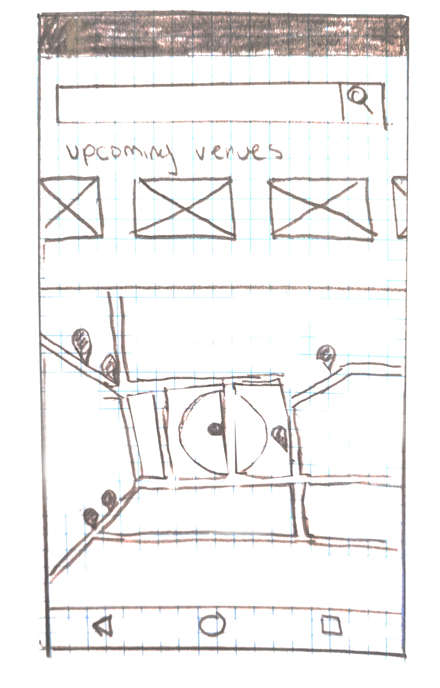

Early
Sketches.

Once talking to a general demographic that would use Valet, we had to know what features they liked and what design layout was preferred. Taking influence from Uber’s map API on the front page of their app, Valet took this inspiration as a way for someone to quickly search for a spot, regardless of the time.
Along with the map design, Valet had to acknowledge it had truly two customers: people looking for parking and people looking to share their driveway space. With more than one primary user, Valet must create a design that meets both of their needs in one location. While these sketches are rudimentary for low-fidelity mock-ups, some could not showcase features such as listing your space or selecting a proper price, but all have been accounted for in the business plan.